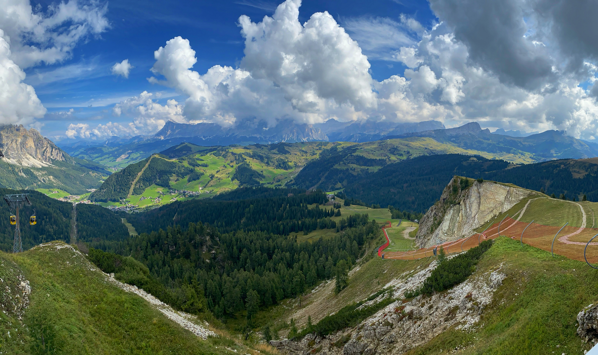

Dolomites
- Country: Italy
- Category: Trek
- Project date: 5 September 2022 | 12 September 2022
- Maps & Codes: Dolomites Github
Dolomites, The Pale Mountains.
Small disclaimer: This subject consists of several days of walking, a real Trek. For the sake of narration and to make it easier for you to organise, each day will be described one after the other.
 Day #1 San Ciprieno ⮞ Rifugio Bergamo
Day #1 San Ciprieno ⮞ Rifugio Bergamo
Distance : 9 km
Time : 5 hours
Gross: +3831' -296'
We get out of the bus from Bolzano, take a picture and let's go ! This little anxiety to say to ourselves that we might have trouble keeping our ambitious schedule (~5-6h walking per day for 8 days), will we get lost ? Will we get lost and injured ?
I'd like to take this opportunity to warn you that you absolutely must be well equipped. Beyond a survival kit (keep it light I remind you), opt for good waterproof clothing, you will be vulnerable to the weather, and vice versa for the sun. September is, in our opinion, the ideal month.

A majority of the content taken in photos will not necessarily be exploitable but it doesn't matter, the goal is to enjoy and take the time to stop and observe. I had a lot of trouble, for fear of not arriving at the refuges in time, most of them close their doors or start dinner around 6:30-7pm.
More than 1000m of ascent in the legs on the first day, that puts you back in place especially as the body is not yet used to it, so start slowly and adapt this story to your capacities, the goal is not to suffer. Because of our morphologies, the talents of hikers/trekkers differ, do not try to follow more experienced people at all costs, you will leave your ankles there, you will find yourself in the evening, enjoy this time alone !
The highlight spot of this route is the Rechter Leger valley, free-range cows at the foot of the mountains, a green forest, have a picnic there, get your strength back ! The most demanding part comes right after !
You are finally at the Rifugio Bergamo, you finally see the two-coloured Tyrolean flag ! The refuge meal, simple but nourishing, as a refuge meal should be, quickly numbs us, it was Goulash, be prepared to eat a lot of it in the refuges, with polenta they often make the pair. Go out and admire the views, especially the one behind the hut, you'll be taking it tomorrow and behind the early morning slope will be one of your best views.
Day #2 Rifugio Bergamo ⮞ Rifugio Valentini
Distance : XX km
Time : XX hours
Gross: +XX' -XX'

The view from the Passage de Moglignon at 2598m, the highest point of the day, will amaze you. From the Alpe di Tires hut, let yourself be carried away by the Irish landscape, large grassy valleys and open spaces. Watch out ! We saw our first marmots at this point, including some cute babies, listen and you will hear their songs. We saw a huge flock of sheep and their shepherds too, we have some truly wonderful memories of this passage.
Don't be distracted by the monotony of the path, you will be walking for a long time in a rather similar scenery, wait until you come across a hut called Sasso Piatto to start seeing something else, this one is quite lively. Watch again ! We had seen our only wild Eidelweiss by this time, don't pick them, please don't be silly.
Arrived at the Valentini hut, after passing through ski resorts and other infrastructure. The comfort of these rooms resembles the classic hotels, less picturesque than last night, moreover book the refuges months in advance. Here for example a refuge a little lower was already full hence the choice of Valentini. We did not eat very well though.

Day #3 Rifugio Valentini ⮞ Franz Kostner
Distance : XX km
Time : XX hours
Gross: +XX' -XX'

Here, my fiancée sprained her ankle because she was trying to walk too much/fast during the last two days. We then had to adapt our route. I repeat, be equipped, for example I had planned alternative routes for each day, modifying the difficulties or passing at particular points. So it was not very difficult for us, because of our experience, our physical map helped us a lot. We don't trek with phones, too prone to battery and internet coverage in these isolated and self-sufficient places.
So we went to the Passo Sella bus station, a little further down towards Passo Pordoi and then on to Corvara in Badia (line 471 + 472, again check your timetable, after September the lines close one by one).
Most drivers will not make you pay for the journey even if you give them money, either because they are nice and helpful in these remote places, or because their terminal does not work, or because they are late, etc... Don't be surprised !
Once in Corvara, two successive cable cars will take you to the foot of the refuge. My injured but courageous fiancée decided to take the first one but refused the second one, despite its steep positive gradient and shy signposting. You will see a magnificent view at the junction of the peripheries and an equally pretty lake a little higher up. On our way a herd of goats followed us well, including a billy goat that was a bit too close to me, he wanted to keep me out of his land at all costs... He won.
Here, a very nice formula made us take a very small hut very isolated from the refuge at 2500m. The experience is unforgettable, don't hesitate for a few euros more ! The fog in the evening near the Piz Boè and its 3152m of altitude, and the dark night to reach the hut after the meal were really funny. We keep the best memory of the meal. The hut is more expensive than average but the place, the raps, the responsible ecofriendly guideline, the hut, the offered aperitif, all that is absolutely worth it !

Day #4 Franz Kostner ⮞ Rifugio Santa Croce
Distance : XX km
Time : XX hours
Gross: +XX' -XX'
Do you remember the two preiphericals ? My fiancée wanted to walk down the whole thing feeling a bit better ! So here we are, walking down from Kostner to Corvara in Badia, with heavy rain all along the 2 hour journey, the first of the trek ! After an exceptionally hot summer, we didn't complain. In order not to push too hard we decided to take a short bus ride to Badia (460 to Brunico, stop Abtei Pedratsches).

From there, once again, two cable cars follow one another. Same principle, we want to save ourselves to be able to finish knowing that the rest of the trek will be much more isolated, without bus or cable cars. We take the first one, not the second one and the next day we will walk down.
From here (the junction of the two peripheral roads) an initiatory trip presents itself for all pious hikers. The refuge of the cross is an old church (nowadays a UNESCO heritage site). At regular intervals, you will see biblical scenes staged in the Tyrolean style, i.e. in small wooden sarcophagi on piles.
It's a fairly peaceful place, not too crowded due to its size, but also because hikers prefer to head further east to Fanes Hut, a much prettier plain, but very popular and full at our booking. Anyway, it was a really nice place that we did not regret and the next day we found our way back to Fanes Hut, missing almost nothing.

Day #5 Rifugio Santa Croce ⮞ Rifugio Biella
Distance : XX km
Time : XX hours
Gross: +XX' -XX'
We know we will be walking (a lot) for at least 3 days in a row, my fiancée's ankle is just starting to recover, so we treat ourselves to one last bus ride, let's be reasonable. To do this we take our bus from Puntac to Zwischenwasser (line 460) and then to Pederù (line 462). Here we are, the beginning of the most isolated part of the route. No more pharmacies in Badia, no more supermarkets, no more buses, cable cars, only your legs !

I remember this forest walk (although it wasn't all forest, far from it) as I associate it with the rainiest day during 4 hours of walking, knowing in advance that the Biella hut is the most modest of all our route (25€ per night without meals), so no shower, big dorm room, not a very comforting prospect, but we're off !
The climb from the Ra Stua hut to the Biella hut never seems to end, and that's normal, don't worry if the route doesn't follow the map exactly, trust your instincts and markings.
The night at the Biella hut was going to be short because of some heavy snorers and about 50 hikers were sleeping there, some of whom were desperate to see the sunrise at 5am. I advise you to wait for the last refuge for that, it will be worth all the sunrises in the world !

Day #6 Rifugio Biella ⮞ Rifugio Vallandro
Distance : 13 km
Time : 7 hours
Gross: +1861' -2892'
This is the longest, most technical and demanding part of the trek.
Indeed, this is the most isolated part of the trek, be fit and determined. The longest, count 7-8h at a reasonable pace, 6-7h for advanced levels. And finally, technical, you will find a 15 minutes section at the limit of the via ferrata, without the safety straps. Be sure of your footing and not afraid of heights, otherwise you will have a bad time, especially if you pass someone in the opposite direction on a path as narrow as my shoulders. And the classic positive elevation change of the same level as Day #1 as a reference. For reference, this section is a little after the Rifugio Rossalm.
All this to say that you just need to be conditioned, but you will be delighted with this route, the last stage before the Grail: the Tre Cime! At the end of the route you will come across marmots, limestone landscapes, granite chaos, etc.
If you have the opportunity, allow an extra 1-2 hours to make a diversion to the Lago Di Braies, a must-see in the Dolomites.
Once we arrived at the Vallandro hut, I must say that it is probably one of the huts where we had the best night, warm place (except the man at the counter), quiet dormitory where we were only 3 (after Biella everything seemed quiet), free shower, copious meal, real pastries for dessert!

Day #6 Rifugio Vallandro ⮞ Rifugio A. Locatelli
Distance : XX km
Time : XX hours
Gross: +XX' XX'
After this expensive day, my fiancée's ankle woke up, so a short 20 min bus ride was needed to finish in beauty and good memories.
To do this, from the Vallandro refuge we went down 2 hours of forest early in the morning with a great sun, very pleasant place ! We arrived in a small village where we saw the Schluderbach - Carbonin (in Dobbiaco) stop. You should have a small internet connection or a reservation in advance as the bus route to Rifugio Auronzo (Drei Zinnen) is a reserved route. Plan a budget too. This is a highly touristic place, the margins are comfortable.
From the hut, plan on a 1h30 walk to the A. Locatelli hut, the last stop and not the only one. Locatelli hut, last but not least !
The price of the ticket aside, and my red ass, it remains without doubt one of the most beautiful days of this crossing. It ends with the arrival at the Dreizinnenhütte refuge with the most beautiful view of the Tre Cime, jewels of the Dolomites. We took the path behind the hut to some caves (not natural) but offering magnificent photos of the 3 summits.
The meal was very pleasant by the way, the first real refuge meal according to us, the rest we had had little chance with people not very talkative/interested/bilingual.


Alta Via Trek in figures
Alta Via 150km | Mean gross XX'+ XX'- | Cumulative Sum gross XX'+ XX'- | XX hours of walking